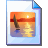

Microsoft®
Windows
xp
Starting Windows…
Portfolio Edition — a Windows XP desktop rebuilt by Marco Tancredi
Windows
xp
Portfolio Edition
To begin, click your user name
Marco Tancredi
Guest
Have a look around
After you log on, you can add or change accounts.
Just go to Control Panel and click User Accounts.
Bin
Internet
Projects
Paint
Notepad
Snake

Kira at the Beach.jpg
Kira 1.jpeg
Kira 2.jpeg
Marco Tancredi
Internet
Internet Explorer
E-mail
Outlook Express
Projects
My work
Minesweeper
Snake
Command Prompt
cmd.exe
Marco's Blog
Notepad
Winamp
Paint
Windows Media Player
Windows Messenger
All Programs
▸
My Documents
My Recent Documents
My Pictures
My Music
My Computer
Control Panel
Set Program Access and Defaults
Connect To
Printers and Faxes
Help and Support
Search
Run...
Start